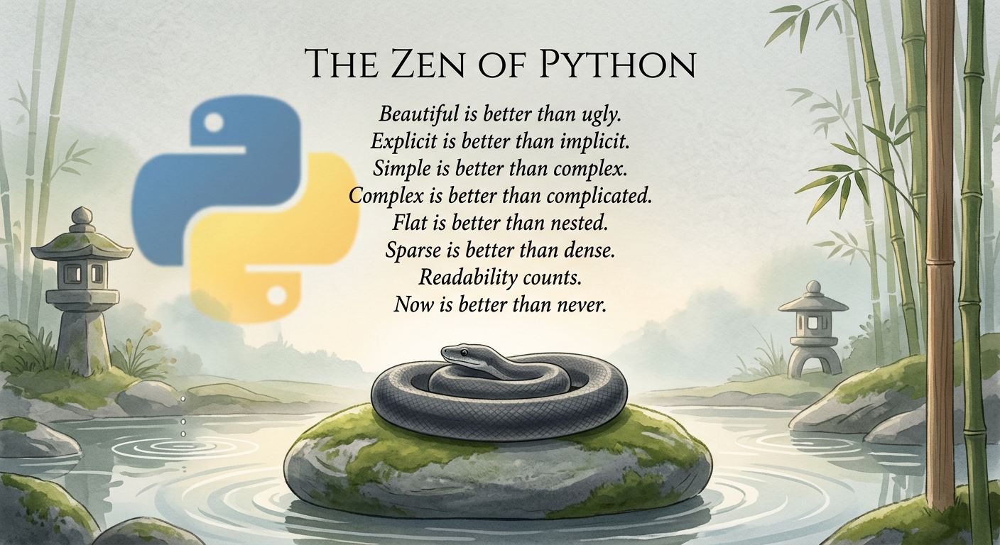
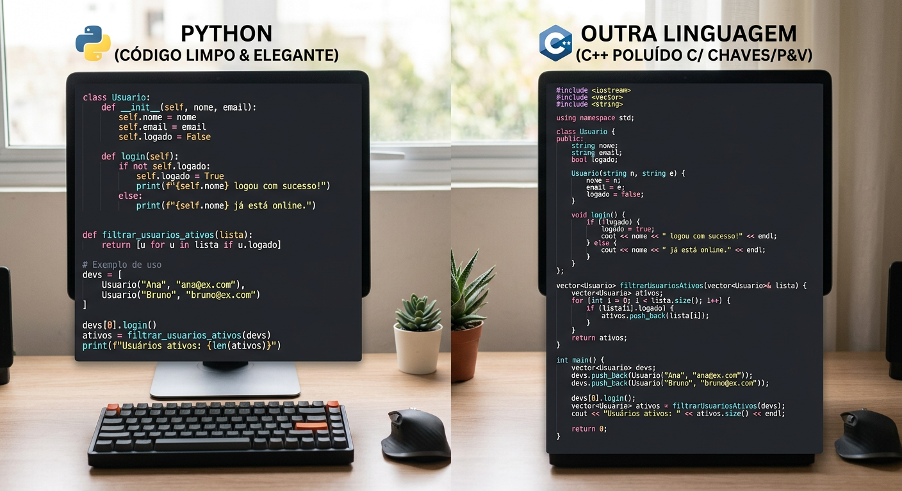
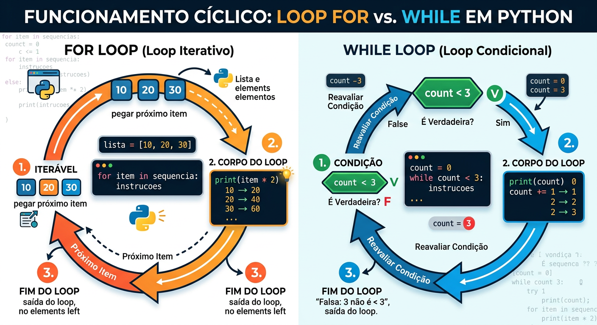
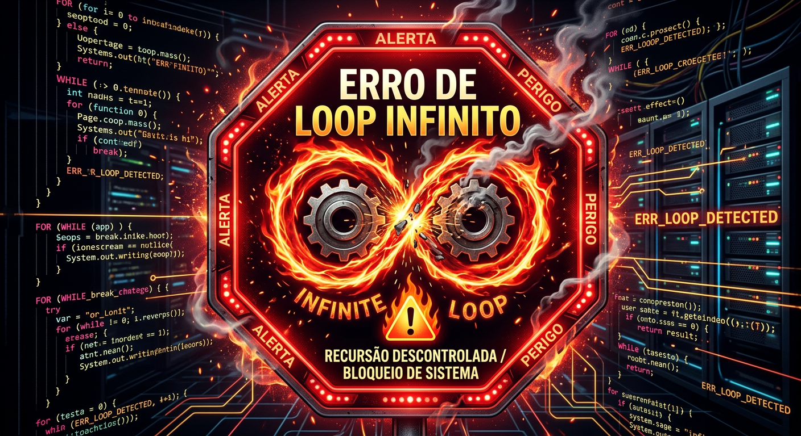

Uma introdução à filosofia e estrutura do Python
"Bonito é melhor que feio. Explícito é melhor que implícito. Simples é melhor que complexo."
- O Zen of Python (PEP 20)


Quando você escreve um programa, está redigindo um documento para outros humanos. O Python força um visual limpo, eliminando ruídos sintáticos para destacar a lógica.
Números inteiros, positivos ou negativos, sem decimais (ex: 10, -5, 0).
Números reais com parte decimal. Ex: 3.14, 2.0.
Sequências imutáveis de caracteres manipuladas como texto. Ex: 'Olá'.
Tipo lógico que assume True ou False. Base do controle de fluxo.
Coleções ordenadas e mutáveis. Usa [ ].
Coleções ordenadas e imutáveis. Usa ( ).
Pares chave-valor não ordenados. Usa { }.
Elementos únicos não ordenados. Usa { }.
São coleções de pares chave-valor. Funcionam como um dicionário real: você busca uma palavra (chave) para encontrar sua definição (valor). Muito rápidos para recuperação de dados.
Coleções de elementos únicos. Eliminam duplicatas automaticamente e são ideais para operações matemáticas como união e interseção de conjuntos.
# Exemplo de verificação
idade = 18
if idade >= 18:
print("Maior de idade")
elif idade > 0:
print("Menor de idade")
else:
print("Idade inválida")Itera sobre sequências (listas, strings). "Para cada item nesta sequência, execute isto".

Executa enquanto uma condição booleana permanecer True. Requer atenção à condição de parada.
Em vez de escrever comandos repetidos, encapsulamos lógicas em
funções
com a palavra-chave
def
.
return
.

Ao usar o laço
while
, certifique-se de que a condição se tornará
False
em algum momento. Caso contrário, o programa travará executando a mesma tarefa para sempre!
Qual das estruturas de dados abaixo é imutável (não pode ser alterada após a criação)?
Combine o Zen do Python, tipos básicos, estruturas e modularidade para escrever softwares inteligentes e elegantes.